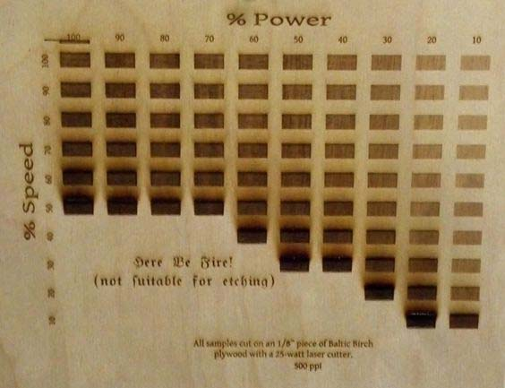

What is Laser Cutting? It is Light being amplified by Simulated Emission of Radiation. Meaning a very high power light force meant to blast through materials. It is typically used for industrial manufacturing of parts. Now schools are trying to use it to teach students or it is used by small business owners that want to create their own products. The laser when directed at a material either melts, burns or vaporizes said material. It uses optics to focus the laser & CNC for motion control.
You can use Laser Cutting to Cut, Mark or engrave with Raster or Vector images. Screen Printing with does Haltone, Hold or a Path.
Things to take note of while cutting. First would be the Kerf. The Kerf is something that when the laser is cutting, it burns away a part of the material ranging from 0.08mm to 1mm. Any areas in the design where cut lines come closer than 0.5mm could be burned away entirely. With this in mind, the user has to give space or in the settings of printing, make sure that there is enough space in the design. Next factor is the Chamfer & joints which the user can't have one size larger than the other in order for the pieces to connect. Lastly Parametric Designs which are things like simple boxes, Polygon Boxes or Kerf Kent Boxes (Boxes with roudned corners).
When cutting, the laser settings are tuned to what material you are cutting and how thick it is. The Power setting allows the user to burn deeper into the material but Too much ot Too little sacrifices detail. The Speed setting lets the user set how fast they want the cutter to move. The user has to keep in mind that, even though higher speed saves time, the burn would be shallower. And same as power, too high or too low speed reduces detail. The Frequency setting (PPI) is basically pulses per inch of travel. The higher this is set increases the burning/melting effect. Acrylic would be set to about 500 ~ 1000. Wood would be 100 ~ 500.
General rule of thumb: 1) Doubling power doubles depth of cut. 2) Halving speed doubles depth of cut. Always use vendor recommended settings as starting point.
Before beginning to cut, the user has to think of what material to use, whether said material could fit into the laser cutter and what software should the user use. Using the software CorelDRAW, it is able to open file types that can be used to print. Such file formats are CDR (CorelDRAW), AI (Adobe Illustrator), EPS (Adobe Illustrator), DXF (MUST BE 2D), DWG (MUST BE 2D) and PDF (Cut objects must be vector based).
Things such as Bitmap Images (JPG, PNG, TIF, etc.) can be used for ENGRAVING ONLY. SVG files can be used but often have trouble with scaling.
In CorelDRAW, all the user has to do is import the file they want to cut. Make sure the scaling is 1:1. After importing, it is important to check your lines. Be sure to set the stroke as HAIRLINE, set stroke to black (rgb = #000). In the stroke settings, set it to black and stroke width to hairline.
For printing, make sure the printer set is the laser cutter and set your specified properties within the preferences option for the printing. After settling the properties and pressing print from the computer, proceed to the laser cutter and select the Job you are pritning.
At the printer, make sure that everything is ok with the safety. With the material in place, set the printer to JOG so that you can set where on the material you want to begin cutting. After you have set the postion, press in the stick to lock the location.
IMPORTANT
to take not that if you do not close the cover, the laser would not ignite. Which is a good safety feature.It is normal when cutting, small fires would break out. If the material continues to burn and the fire won't go away, immediately hit the emergency button / switch off the power. Open the cover to cut off the laser. Only attempt to blow out the flame if it is SAFE. And notify staff on duty immediately. If you realise that the lens is dirty, stop cutting immediately and inform the staff on duty.
The PPI setting determines how fast the laser pulses during a cutting operation. The lower the PPI the more gaps there will be inbetween each pulse.